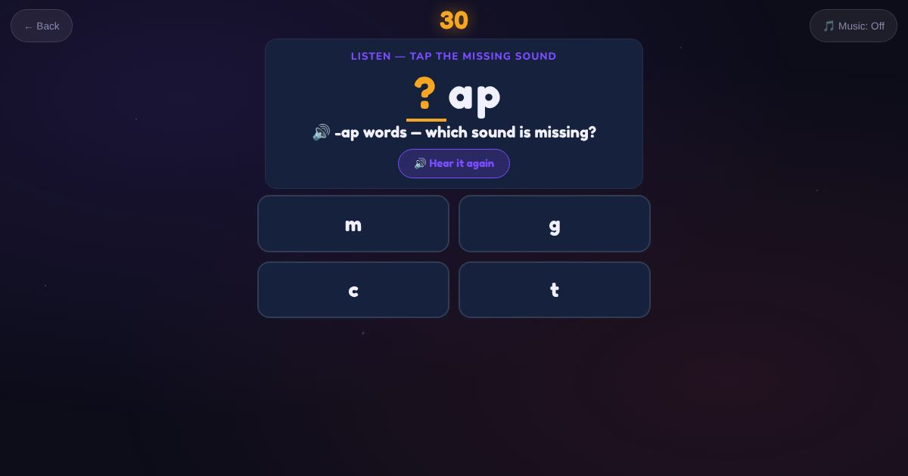

For teachers and tutors
About Beginner Sound Gap
A first phonics game built on short CVC word families: -an, -at, -ap, -et, -en, -ig, -in, -ip, -op, -ot, -ug and -un. The learner hears a word like "cat", sees "_at" and taps the missing first sound. Every round stays in one rhyming family, so one sound decides the answer.

How to play
- Listen to the word.
- Look at the word with a gap.
- Tap the missing sound.
Play it as a class
Choose Beginner Sound Gap in the Teacher Game. The projector shows the word family and students tap the sound on their phones.